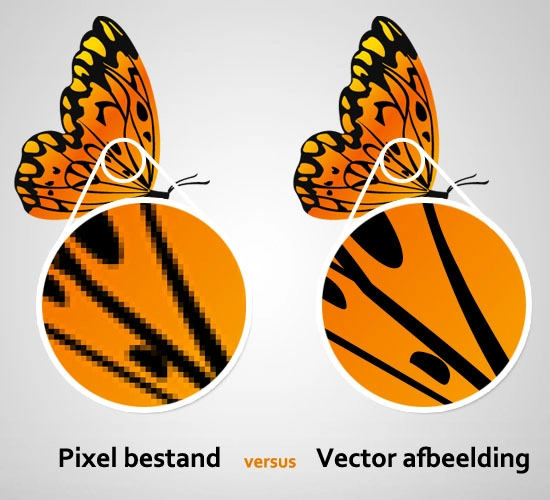

Er zijn verschillende soorten afbeeldingen, namelijk bitmap en vectorafbeeldingen, maar wat is het verschil eigenlijk? Een bitmap afbeelding bestaat uit een aantal pixels. Neem bijvoorbeeld een afbeelding van 10000 bij 20000 pixels op een scherm van 10000 bij 20000 pixels. Als je inzoomt op deze afbeelding totdat je bijvoorbeeld nog maar 1 procent van de afbeelding ziet zie je dat de kwaliteit erg is afgenomen. Dit komt doordat er bij een bitmap afbeelding uit wordt gegaan van een vast aantal pixels, als je een stukje laat zien van de afbeelding die oorspronkelijk 1000 bij 2000 pixels is op een 10000 bij 20000 pixel scherm zul je dus zien dat de je de originele pixels van de afbeelding met het blote oog kan zien. Dit betekent niet dat er dan minder pixels van je beeldscherm aan staan, de pixels van je scherm vormen gewoon samen één pixel van de oorspronkelijke afbeelding. Bij een vectorafbeelding is het juist het tegenovergestelde. Hierbij wordt niet uitgegaan van een vast aantal pixels bij de afbeelding. Als je inzoomt op een vector afbeelding zie je dat de kwaliteit niet verandert, De kleuren van de pixels worden weer herberekent om het er zo scherp mogelijk uit te laten zien.
